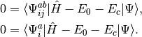
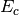
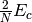

CEPA: Coupled-Pair Methods¶
Code author: A. Eugene DePrince
Section author: A. Eugene DePrince
Module: Keywords, PSI Variables, CEPA
Coupled-pair methods can be viewed as approximations to coupled-cluster (CC) theory or as size-extensive modifications of truncated configuration interaction (CI) theory. The methods have the same complexity as CI with single and double excitations (CISD), and solving the CISD or coupled-pair equations requires fewer floating point operations than solving the CC with singles and doubles (CCSD) equations. CISD, CCSD, and the coupled-pair methods discussed below all scale formally with the sixth power of system size. For a detailed discussion of the properties of various coupled-pair methods, see Ref. [Wennmohs:2008].
What follows is a very basic description of the practical differences in the equations that define each of the coupled-pair methods implemented in PSI4. We begin with the CISD wave function
(1)
where we have chosen the intermediate normalization,  .
The CISD correlation energy is given by
.
The CISD correlation energy is given by
(2)
and the amplitudes can be determined by the solution to the coupled set of eqations:
(3)
The CISD method is not size-extensive, but this problem can be overcome by making very simple modifications to the amplitude
equations. With malice and forethought, we replace the correlation energy, , with generalized shifts for
the doubles and singles equations,  and
and  :
:
(4)
These shifts approximate the effects of triple and quadruple excitations.
The values for and used in several coupled-pair methods are given in Table
CEPA Shifts. Note that these shifts are defined in a spin-free formalism
for closed-shell references only.
method sdci dci NA cepa(0) 0 0 cepa(1) cepa(3) acpf  aqcc


![[1-\frac{(N-3)(N-2)}{N(N-1)}]E_c](_images/math/3a90f4e1b6e9fb49e97981e384c33880eef8d3fd.png)
The pair correlation energy,  , is simply a partial sum of the correlation energy. In a spin-free formalism,
the pair energy is given by
, is simply a partial sum of the correlation energy. In a spin-free formalism,
the pair energy is given by
(5)
Methods whose shifts ( and ) do not explicitly depend on orbitals  or
or  (CISD, CEPA(0), ACPF, and AQCC)
have solutions that render the energy stationary with respect variations in the amplitudes. This convenient property allows
density matrices and 1-electron properties to be evaluated without any additional effort.
(CISD, CEPA(0), ACPF, and AQCC)
have solutions that render the energy stationary with respect variations in the amplitudes. This convenient property allows
density matrices and 1-electron properties to be evaluated without any additional effort.
The coupled-pair methods currently supported in PSI4 are outlined in Table CEPA Methods.
name calls method energy derivatives 1-electron properties cepa(0) coupled electron pair approximation, variant 0 Y N Y cepa(1) coupled electron pair approximation, variant 1 Y N N cepa(3) coupled electron pair approximation, variant 3 Y N N acpf averaged coupled-pair functional Y N Y aqcc averaged quadratic coupled-cluster Y N Y sdci configuration interaction with single and double excitations Y N Y dci configuration interaction with double excitations Y N Y
Basic Coupled Pair Keywords¶
BASIS¶
Primary basis set
- Type: string
- Possible Values: basis string
- Default: No Default
FREEZE_CORE¶
Specifies how many core orbitals to freeze in correlated computations. TRUE will default to freezing the standard default number of core orbitals. For heavier elements, there can be some ambiguity in how many core orbitals to freeze; in such cases, SMALL picks the most conservative standard setting (freezes fewer orbitals), and LARGE picks the least conservative standard setting (freezes more orbitals). More precise control over the number of frozen orbitals can be attained by using the keywords NUM_FROZEN_DOCC (gives the total number of orbitals to freeze, program picks the lowest-energy orbitals) or FROZEN_DOCC (gives the number of orbitals to freeze per irreducible representation)
- Type: string
- Possible Values: FALSE, TRUE, SMALL, LARGE
- Default: FALSE
R_CONVERGENCE¶
Desired convergence for the t1 and t2 amplitudes, defined as the norm of the change in the amplitudes between iterations.
- Type: conv double
- Default: 1.0e-7
MAXITER¶
Maximum number of iterations to converge the t1 and t2 amplitudes.
- Type: integer
- Default: 100
DIIS_MAX_VECS¶
Number of vectors to store for DIIS extrapolation.
- Type: integer
- Default: 8
MP2_SCALE_OS¶
Opposite-spin scaling factor for SCS-MP2.
- Type: double
- Default: 1.20
MP2_SCALE_SS¶
Same-spin scaling factor for SCS-MP2
- Type: double
- Default: 1.0/3.0
DIPMOM¶
Compute the dipole moment? Note that quadrupole moments will also be computed if PRINT >= 2.
- Type: boolean
- Default: false
CEPA_VABCD_DIRECT¶
Use integral-direct implementation of the (ac|bd) t(ij,cd) contraction? AO integrals will be generated on the fly. The CEPA iterations will be slower, but the AO->MO integral transform will be faster, and the out-of-core sort of the (AC|BD) integrals will be avoided.
- Type: boolean
- Default: false
Advanced Coupled Pair Keywords¶
CEPA_LEVEL¶
Which coupled-pair method is called? This parameter is used internally by the python driver. Changing its value won’t have any effect on the procedure.
- Type: string
- Default: CEPA(0)
SCS_CEPA¶
Perform SCS-CEPA? If true, note that the default values for the spin component scaling factors are optimized for the CCSD method.
- Type: boolean
- Default: false
CEPA_SCALE_OS¶
Oppposite-spin scaling factor for SCS-CEPA.
- Type: double
- Default: 1.27
CEPA_SCALE_SS¶
Same-spin scaling factor for SCS-CEPA.
- Type: double
- Default: 1.13
CEPA_NO_SINGLES¶
Flag to exclude singly excited configurations from the computation. Note that this algorithm is not optimized for doubles-only computations.
- Type: boolean
- Default: false